Table of Contents
24. Aggregate Demand and Supply
24.1. Introducing Aggregate Expenditure
24.1.1. Defining Aggregate Expenditure: Components and Comparison to GDP
24.1.2. Aggregate Expenditure at Economic Equilibrium
24.1.3. Graphing Equilibrium
24.1.4. The Multiplier Effect
24.2. Introducing Aggregate Demand and Aggregate Supply
24.2.1. Explaining Fluctuations in Output
24.2.2. Classical Theory
24.2.3. Keynesian Theory
24.3. Aggregate Demand
24.3.1. Introducing Aggregate Demand
24.3.2. The Slope of the Aggregate Demand Curve
24.3.3. Reasons for and Consequences of Shifts in the Aggregate Demand Curve
24.4. Aggregate Supply
24.4.1. Introducing Aggregate Supply
24.4.2. The Slope of the Short-Run Aggregate Supply Curve
24.4.3. The Slope of the Long-Run Aggregate Supply Curve
24.4.4. Moving from Short-Run to Long-Run
24.4.5. Reasons for and Consequences of Shifts in the Short-Run Aggregate Supply Curve
24.5. The Aggregate Demand-Supply Model
24.5.1. Macroeconomic Equilibrium
24.5.2. Reasons for and Consequences of Shift in Aggregate Demand
24.5.3. Reasons for and Consequences of Shift in Aggregate Supply
24. Aggregate Demand and Supply
24.1. Introducing Aggregate Expenditure
24.1.1. Defining Aggregate Expenditure: Components and Comparison to GDP
Aggregate expenditure is the current value of all the finished goods and services in the economy.
Learning Objective
Define aggregate expenditure
Key Points
- The aggregate expenditure is the sum of all the expenditures undertaken in the economy by the factors during a specific time period. The equation is: AE = C + I + G + NX.
- The aggregate expenditure determines the total amount that firms and households plan to spend on goods and services at each level of income.
- The aggregate expenditure is one of the methods that is used to calculate the total sum of all the economic activities in an economy, also known as the gross domestic product (GDP).
- When there is excess supply over the expenditure, there is a reduction in either the prices or the quantity of the output which reduces the total output (GDP) of the economy.
- When there is an excess of expenditure over supply, there is excess demand which leads to an increase in prices or output (higher GDP).
Key Terms
- aggregate
- A mass, assemblage, or sum of particulars; something consisting of elements but considered as a whole.
- expenditure
- Act of expending or paying out.
- gross domestic product
- A measure of the economic production of a particular territory in financial capital terms over a specific time period.
Aggregate Expenditure
In economics, aggregate expenditure is the current value of all the finished goods and services in the economy. It is the sum of all the expenditures undertaken in the economy by the factors during a specific time period. The equation for aggregate expenditure is: AE = C + I + G + NX.
Written out the equation is: aggregate expenditure equals the sum of the household consumption (C), investments (I), government spending (G), and net exports (NX).
- Consumption (C): The household consumption over a period of time.
- Investment (I): The amount of expenditure towards the capital goods.
- Government expenditure (G): The amount of spending by federal, state, and local governments. Government expenditure can include infrastructure or transfers which increase the total expenditure in the economy.
- Net exports (NX): Total exports minus the total imports.
The aggregate expenditure determines the total amount that firms and households plan to spend on goods and services at each level of income.
Comparison to GDP
The aggregate expenditure is one of the methods that is used to calculate the total sum of all the economic activities in an economy, also known as the gross domestic product (GDP). The gross domestic product is important because it measures the growth of the economy. The GDP is calculated using the Aggregate Expenditures Model .
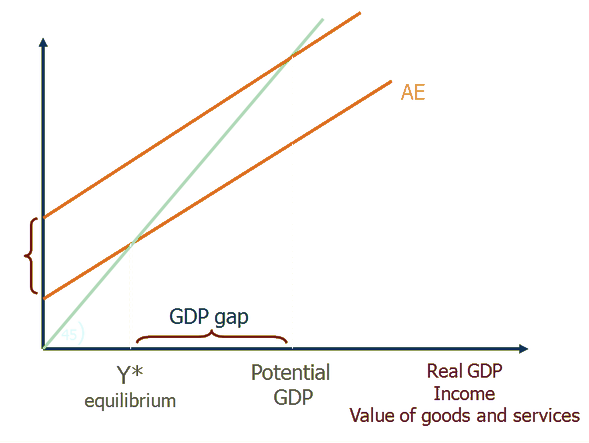{kind=link}
This graph shows the aggregate expenditure model. It is used to determine and graph the real GPD, potential GDP, and point of equilibrium. A shift in supply or demand impacts the GDP.
An economy is at equilibrium when aggregate expenditure is equal to the aggregate supply (production) in the economy. The economy is not in a constant state of equilibrium. Instead, the aggregate expenditure and aggregate supply adjust each other toward equilibrium.
When there is excess supply over the expenditure, there is a reduction in either the prices or the quantity of the output which reduces the total output (GDP) of the economy.
In contrast, when there is an excess of expenditure over supply, there is excess demand which leads to an increase in prices or output (higher GDP). A rise in the aggregate expenditure pushes the economy towards a higher equilibrium and a higher potential of the GDP.
24.1.2. Aggregate Expenditure at Economic Equilibrium
An economy is said to be at equilibrium when aggregate expenditure is equal to the aggregate supply (production) in the economy.
Learning Objective
Identify the assumptions fundamental to classical economics in regards to aggregate expenditure at economic equilibrium
Key Points
- In economics, aggregate expenditure is the current value (price) of all the finished goods and services in the economy. The equation for aggregate expenditure is AE = C+ I + G + NX.
- In the aggregate expenditure model, equilibrium is the point where the aggregate supply and aggregate expenditure curve intersect.
- The classical aggregate expenditure model is: AE = C + I.
- Classical economics states that the factor payments made during the production process create enough income in the economy to create a demand for the products that were produced.
Key Terms
- aggregate
- A mass, assemblage, or sum of particulars; something consisting of elements but considered as a whole.
- expenditure
- Act of expending or paying out.
- equilibrium
- The condition of a system in which competing influences are balanced, resulting in no net change.
Aggregate Expenditure
In economics, aggregate expenditure is the current value (price) of all the finished goods and services in the economy. The equation for aggregate expenditure is AE = C+ I + G + NX.
Written out in full, the equation reads: aggregate expenditure = household consumption (C) + investments (I) + government spending (G) + net exports (NX).
Aggregate expenditure is a method that is used to calculate the total value of economic activities, also referred to as the gross domestic product (GDP). The GDP of an economy is calculated using the aggregate expenditure model.
Economic Equilibrium
An economy is said to be at equilibrium when aggregate expenditure is equal to the aggregate supply (production) in the economy. The economy is constantly shifting between excess supply (inventory) and excess demand. As a result, the economy is always moving towards an equilibrium between the aggregate expenditure and aggregate supply. On the aggregate expenditure model, equilibrium is the point where the aggregate supply and aggregate expenditure curve intersect. An increase in the expenditure by consumption (C) or investment (I) causes the aggregate expenditure to rise which pushes the economy towards a higher equilibrium .
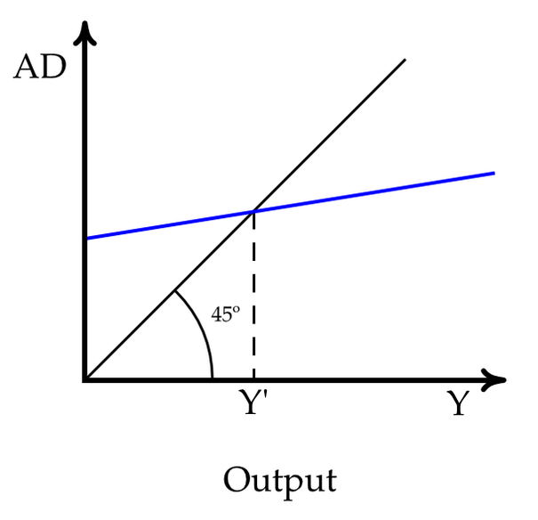{kind=link}
In this graph, equilibrium is reached when the total demand (AD) equals the total amount of output (Y). The equilibrium point is where the blue line intersects with the black line.
Classical Economics - Aggregate Expenditure
Classical economists believed in Say's law, which states that supply creates its own demand. This idea stems from the belief that wages, prices, and interest rage were all flexible. Classical economics states that the factor payments (wage and rental payments) made during the production process create enough income in the economy to create a demand for the products that were produced. This belief is parallel to Adam Smith's invisible hand - markets achieve equilibrium through the market forces that impact economic activity.
The classical aggregate expenditure model is: AE = C + I .
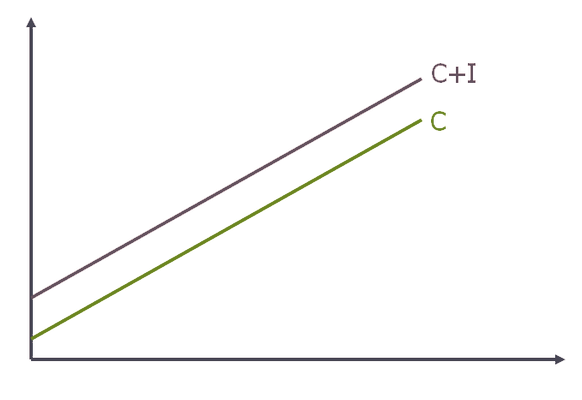{kind=link}
This graph shows the classical aggregate expenditure where C is consumption expenditure and I is aggregate investment. The aggregate expenditure is the aggregate consumption plus the planned investment (AE = C + I).
The aggregate expenditure equals the aggregate consumption plus planned investment. Classical economics assumes that the economy works on a full-employment equilibrium, which is not always true. In reality, many economists argue that the economy operates at an under-employment equilibrium.
24.1.3. Graphing Equilibrium
An economy is said to be at equilibrium when the aggregate expenditure is equal to the aggregate supply (production) in the economy.
Learning Objective
Demonstrate how aggregate demand and aggregate supply determine output and price level by using the AD-AS model
Key Points
- Aggregate supply (AS) is the total supply of goods and services that firms in an economy plan on selling during a specific time period.
- Aggregate demand (AD) is the total demand for final goods and services in the economy at a given time and price level.
- Aggregate expenditure is the current value of all the finished goods and services in the economy. The equation for aggregate expenditure is: AE = C + I + G + NX.
- The AD-AS model is used to graph the aggregate expenditure at the point of equilibrium.
Key Terms
- equilibrium
- The condition of a system in which competing influences are balanced, resulting in no net change.
- aggregate demand
- The the total demand for final goods and services in the economy at a given time and price level.
- aggregate supply
- The total supply of goods and services that firms in a national economy plan on selling during a specific time period.
Aggregate Supply and Aggregate Demand
In economics, the aggregate supply (AS) is the total supply of goods and services that firms in an economy produce during a specific time period. It represents the total amount of goods and services that firms are willing to sell at a given price level. The aggregate supply curve is graphed as a backwards L-shape in the short-run and vertical in the long-run.
Aggregate demand (AD) is the total demand for final goods and services in the economy at a given time and price level. It shows the amounts of goods and services that will be purchased at all the possible price levels. When aggregate demand increases its graph shifts to the right. It shifts to the left when it decreases which shows a fall in output and prices.
The aggregate supply and aggregate demand determine the output and price for goods and services. The AD-AS model is used to graph the aggregate expenditure and the point of equilibrium .
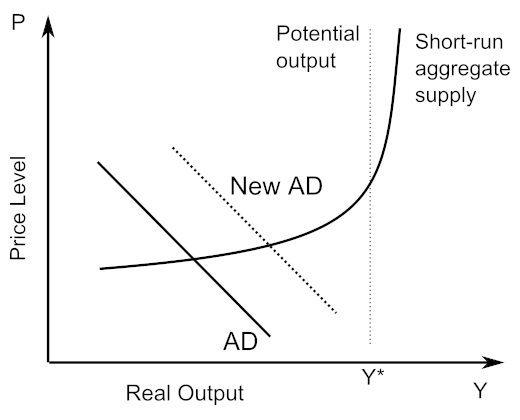{kind=link}
This graph shows the AD-AS model where P is the average price level and Y* is the aggregate quantity demanded. The model is used to show how increases in aggregate demand leads to increases in prices (inflation) and in output.
Aggregate Expenditure
Aggregate expenditure is the current value of all the finished goods and services in the economy. The equation for aggregate expenditure is: AE = C + I + G + NX.
The aggregate expenditure equals the sum of the household consumption (C), investments (I), government spending (G), and net exports (NX).
Graphing Equilibrium
The AD-AS model is used to graph the aggregate expenditure at the point of equilibrium. The AD-AS model includes price changes. An economy is said to be at equilibrium when the aggregate expenditure is equal to the aggregate supply (production) in the economy. It is important to note that the economy does not stay in a state of equilibrium. The aggregate expenditure and aggregate supply adjust each other towards equilibrium. When there is excess supply over expenditure, there is a reduction in the prices or the quantity or output. When there is an excess of expenditure over supply, then there is excess demand which leads to an increase in prices out output. In an effort to adjust and reach equilibrium, the economy constantly shifts between excess supply and excess demand. This shift is graphed using the AD-AS model which determines the output and price for the good or service.
24.1.4. The Multiplier Effect
When the fiscal multiplier exceeds one, the resulting impact on the national income is called the multiplier effect.
Learning Objective
Explain the fiscal multiplier effect
Key Points
- In economics, the fiscal multiplier is the ratio of change in the national income in relation to the change in government spending that causes it.
- The multiplier is influenced by an incremental amount of spending that leads to higher consumption spending, increased income, and then even more consumption. As a result, the overall national income is greater than the initial incremental amount of spending.
- The multiplier effect is a tool that is used by governments to attempt to stimulate aggregate demand in times of recession or economic uncertainty.
- The multiplier effect is criticized because it can create over crowding and an increase in the number of negative externalities.
Key Terms
- fiscal multiplier
- The ratio of a change in national income to the change in government spending that causes it.
- multiplier effect
- A factor of proportionality that measures how much an endogenous variable changes in response to a change in some exogenous variable.
The Fiscal Multiplier and the Multiplier Effect
In economics, the fiscal multiplier is the ratio of change in the national income in relation to the change in government spending that causes it (not to be confused with the monetary multiplier). National income can change as a direct result in a change in spending whether it is private investment spending, consumer spending, government spending, or foreign export spending. When the fiscal multiplier exceeds one, the resulting impact on the national income is called the multiplier effect.
Cause of the Multiplier Effect
The multiplier is influenced by an incremental amount of spending that leads to higher consumption spending, increased income, and then even more consumption. As a result, the overall national income is greater than the initial incremental amount of spending. Simply put, an initial shift in aggregate demand may cause a change in aggregate output (as well as the aggregate income it creates) that is a multiplier of the initial change.
Use of the Multiplier Effect
The multiplier effect is a tool that is used by governments to attempt to stimulate aggregate demand in times of recession or economic uncertainty . The government invests money in order to create more jobs, which in turn will generate more spending to stimulate the economy. The goal is that the net increase in disposable income will be greater than the original investment.
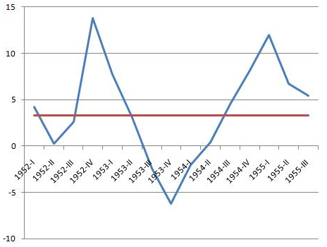{kind=link}
This graph shows the economic recession that occurred in the U.S. in 1953. During recessions, the government can use the multiplier effect in order to stimulate the economy.
Criticisms
Although the multiplier effect usually measures values of one, there have been cases where multipliers of less than one are measured. This suggests that types of government spending can crowd out private investment or consumer spending that would have taken place without the government spending. Crowding out can occur because the initial increase in spending can cause an increase in the interest rates or the price level.
It has been argued that when a government relies heavily on fiscal multipliers, externalities such as environmental degradation, unsustainable resource depletion, and social consequences can be neglected. Over reliance on fiscal multipliers can cause increased government spending on activities that create negative externalities (pollution, climate change, and resource depletion) instead of positive externalities (increased educational standards, social cohesion, public health, etc.).
24.2. Introducing Aggregate Demand and Aggregate Supply
24.2.1. Explaining Fluctuations in Output
In the short run, output fluctuates with shifts in either aggregate supply or aggregate demand; in the long run, only aggregate supply affects output.
Learning Objective
Differentiate between short-run and long-run effects of nominal fluctuations
Key Points
- In the short run, output is determined by both the aggregate supply and aggregate demand within an economy. Anything that causes labor, capital, or efficiency to go up or down results in fluctuations in economic output.
- Aggregate supply and aggregate demand are graphed together to determine equilibrium. The equilibrium is the point where supply and demand meet.
- According to Hume, in the short-run, and increase in the money supply will lead to an increase in production.
- According to Hume, in the long-run, an increase in the money supply will do nothing.
Key Terms
- economic output
- The productivity of a country or region measured by the value of goods and services produced.
- nominal
- Without adjustment to remove the effects of inflation (in contrast to real).
Economic Output
In economics, output is the quantity of goods and services produced in a given time period. The level of output is determined by both the aggregate supply and aggregate demand within an economy. National output is what makes a country rich, not large amounts of money. For this reason, understanding the fluctuations in economic output is critical for long term growth. There are a series of factors that influence fluctuations in economic output including increases in growth and inputs in factors of production. Anything that causes labor, capital, or efficiency to go up or down results in fluctuations in economic output.
Aggregate Supply and Aggregate Demand
Aggregate supply is the total amount of goods and services that firms are willing to sell at a given price in an economy. The aggregate demand is the total amounts of goods and services that will be purchased at all possible price levels.
In a standard AS-AD model, the output (Y) is the x-axis and price (P) is the y-axis. Aggregate supply and aggregate demand are graphed together to determine equilibrium. The equilibrium is the point where supply and demand meet to determine the output of a good or service.
Short-run vs. Long-run Fluctuations
Supply and demand may fluctuate for a number of reasons, and this in turn may affect the level of output. There are noticeable differences between short-run and long-run fluctuations in output.
Over the short-run, an outward shift in the aggregate supply curve would result in increased output and lower prices. An outward shift in the aggregate demand curve would also increase output and raise prices. Short-run nominal fluctuations result in a change in the output level . In the short-run an increase in money will increase production due to a shift in the aggregate supply. More goods are produced because the output is increased and more goods are bought because of the lower prices.
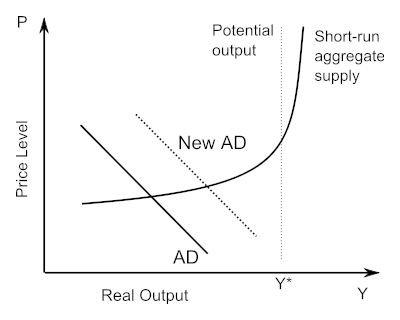{kind=link}
This AS-AD model shows how the aggregate supply and aggregate demand are graphed to show economic output. The AD curve shifts to the right which increases output and price.
In the long-run, the aggregate supply curve and aggregate demand curve are only affected by capital, labor, and technology. Everything in the economy is assumed to be optimal. The aggregate supply curve is vertical which reflects economists' belief that changes in aggregate demand only temporarily change the economy's total output. In the long-run an increase in money will do nothing for output, but it will increase prices.
24.2.2. Classical Theory
Classical theory, the first modern school of economic thought, reoriented economics from individual interests to national interests.
Learning Objective
Identify the assumptions fundamental to classical economics
Key Points
- When classical theory emerged, society was undergoing many changes. The primary economic question involved how a society could be organized around a system in which every individual sought his own monetary gain.
- Classical economics focuses on the growth in the wealth of nations and promotes policies that create national economic expansion.
- Classical theory assumptions include the beliefs that markets self-regulate, prices are flexible for goods and wages, supply creates its own demand, and there is equality between savings and investments.
Key Term
- self-regulating
- Describing something capable of controlling itself.
Classical Theory
Classical theory was the first modern school of economic thought. It began in 1776 and ended around 1870 with the beginning of neoclassical economics. Notable classical economists include Adam Smith, Jean-Baptiste Say, David Ricardo, Thomas Malthus, and John Stuart Mill . During the period in which classical theory emerged, society was undergoing many changes. The primary economic question involved how a society could be organized around a system in which every individual sought his own monetary gain. It was not possible for a society to grow as a unit unless its members were committed to working together. Classical theory reoriented economics away from individual interests to national interests. Classical economics focuses on the growth in the wealth of nations and promotes policies that create national expansion. During this time period, theorists developed the theory of value or price which allowed for further analysis of markets and wealth. It analyzed and explained the price of goods and services in addition to the exchange value.
Adam Smith was one of the individuals who helped establish classical economic theory.
Classical Theory Assumptions
Classical theory was developed according to specific economic assumptions:
- Self-regulating markets: classical theorists believed that free markets regulate themselves when they are free of any intervention. Adam Smith referred to the market's ability to self-regulate as the "invisible hand" because markets move towards their natural equilibrium without outside intervention.
- Flexible prices: classical economics assumes that prices are flexible for goods and wages. They also assumed that money only affects price and wage levels.
- Supply creates its own demand: based on Say's Law, classical theorists believed that supply creates its own demand. Production will generate an income enough to purchase all of the output produced. Classical economics assumes that there will be a net saving or spending of cash or financial instruments.
- Equality of savings and investment: classical theory assumes that flexible interest rates will always maintain equilibrium.
- Calculating real GDP: classical theorists determined that the real GDP can be calculated without knowing the money supply or inflation rate.
- Real and Nominal Variables: classical economists stated that real and nominal variables can be analyzed separately.
24.2.3. Keynesian Theory
Keynesian economics states that in the short-run, economic output is substantially influenced by aggregate demand.
Learning Objective
Differentiate "Chicago School" or "Austrian School" economists from "Keynesian School" economists
Key Points
- Keynesian theory was first introduced by British economist John Maynard Keynes in his book The General Theory of Employment, Interest, and Money, which was published in 1936 during the Great Depression.
- Keynesian theorists believe that aggregate demand is influenced by a series of factors and responds unexpectedly. Shifts in aggregate demand impact production, employment, and inflation in the economy.
- Unemployment is the result of structural inadequacies within the economic system. It is not a product of laziness as believed previously.
- During a recession the economy may not return naturally to full employment. The government must step in and utilize government spending to stimulate economic growth. A lack of investment in goods and services causes the economy to operate below its potential output and growth rate.
- Overcoming an economic depression required economic stimulus, which could be achieved by cutting interest rates and increasing the level of government investment.
Key Term
- Keynesian Economics
- A school of thought that is characterized by a belief in active government intervention in an economy and the use of monetary policy to promote growth and stability.
Keynesian Theory
In economics, the Keynesian theory was first introduced by British economist John Maynard Keynes in his book The General Theory of Employment, Interest, and Money which was published in 1936 during the Great Depression . Keynesian economics states that in the short-run, especially during recessions, economic output is substantially influenced by aggregate demand (the total spending in the economy). According to the Keynesian theory, aggregate demand does not necessarily equal the productive capacity of the economy. Keynesian theorists believe that aggregate demand is influenced by a series of factors and responds unexpectedly. The shift in aggregate demand impacts production, employment, and inflation in the economy.
John Maynard Keynes introduced Keynesian theory in his book, The General Theory of Employment, Interest, and Money.
Economic Thought
At the time that Keynesian theory was developed, mainstream economic thought believed that the economy existed in a state of general equilibrium. The belief was that the economy naturally consumes whatever it produces because the act of producing creates enough income in the economy for that consumption to take place.
Keynesian theory has certain characteristic beliefs:
- Unemployment is the result of structural inadequacies within the economic system. It is not a product of laziness as believed previously.
- During a recession, the economy may not return naturally to full employment. The government must step in and utilize government spending to stimulate economic growth. A lack of investment in goods and services causes the economy to operate below its potential output and growth rate.
- An active stabilization policy is needed to reduce the amplitude of the business cycle. Keynesian economists believed that aggregate demand for goods and services not meeting the supply was one of the most serious economic problems.
- Excessive saving, saving beyond investment, is a serious problem that encouraged recession and even depression.
- Cutting wages will not cure a recession.
- Overcoming an economic depression requires economic stimulus, which could be achieved by cutting interest rates and increasing the level of government investment.
Schools of Economic Thought
It is important to understand the stances of the various school of economic thought. Although the beliefs of each school vary, all of the schools of economic thought have contributed to economic theory is some way.
The Keynesian School of economic thought emphasized the need for government intervention in order to stabilize and stimulate the economy during a recession or depression. In contrast, the Chicago School of economic thought focused price theory, rational expectations, and free market policies with little government intervention. The Austrian School of economic thought focused on the belief that all economic phenomena are caused by the subjective choices of individuals. Unlike other schools, the Austrian school focused on individual actions instead of society as a whole.
24.3. Aggregate Demand
24.3.1. Introducing Aggregate Demand
Aggregate demand (AD) is defined as the total demand for final goods and services in a given economy at a specific time.
Learning Objective
Define Aggregate Demand
Key Points
- To put it simply, AD is the sum of all demand in an economy. It is often called the effective demand or aggregate expenditure (AE), and is the demand of all gross domestic product (GDP).
- In summary, the calculation of aggregate demand can be represented as follows: AD = Consumption + Investment + Government spending + Net export (exports - imports).
- Many societies have increasingly adopted debt and credit as an integral part of their economic system. This has justified the incorporation of debt (also called the credit impulse) into the larger framework of aggregate demand.
- There is some loss of accuracy in combining such a diverse array of economic inputs when calculating aggregate demand.
Key Terms
- expenditure
- The act of incurring a cost or pay out.
- aggregate demand
- In macroeconomics, aggregate demand (AD) is the total demand for final goods and services in the economy at a given time and price level.
Aggregate demand (AD) is defined as the total demand for final goods and services in a given economy at a specific time. Unlike other illustrations of demand, it is inclusive of all amounts of the product or service purchased at any possible price level. Simply put, AD is the sum of all demand in an economy. It is often called the effective demand or aggregate expenditure (AE), and is the demand of all gross domestic product (GDP).
Demand Sources
- Consumption (C): This is the simplest and largest component of aggregate demand (usually 40-60% of all demand), and is often what is intuitively thought of as demand. Consumption is just the amount of consumer spending executed in an economy. Taxes play a role in this exchange as well (i.e. sales tax).
- Investment (I):Investment is a relatively large portion of demand as well, and is referred to as Gross Domestic Fixed Capital Formation. This is the money spent by firms on capital investment (new machinery, factories, stocks, etc.). Investment equates to about 10% of GDP in most economies.
- Government Spending (G):This is referred to as General Government Final Consumption, and is the expenditure by the government. This can include welfare, social services, education, military, etc. Fiscal policy is the way in which governments can alter this spending to drive economic change.
- Net Export (NX):This can be put simply as the sale of goods to foreign countries subtracted by the purchase of goods from other countries (X-M). Trade surpluses and deficits can occur based on whether or not exports or imports are higher.
In summary, the calculation of aggregate demand can be represented as follows: AD = C + I + G + (X-M). The full sum of all demand in an economy takes into account each of these factors in a quantitative way. This curve is illustrated in the figure .
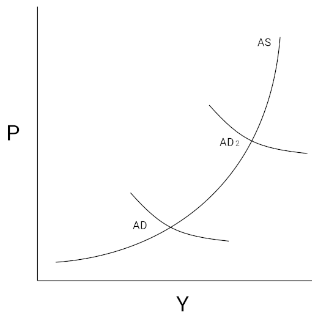{kind=link}
This graph demonstrates the basic relationship between aggregate demand and aggregate supply. The aggregate demand curve is derived via the consumption, investment, government spending, and net export.
The Role of Debt
Many societies have increasingly adopted debt and credit as an integral part of their economic system. This has justified the incorporation of debt (also called the credit impulse) into the larger framework of aggregate demand. From a quantitative perspective this is simply expressed as: Spending = Income + Net Increase in Debt. Spending capital prior to the receipt of capital is an important consideration at both the consumer level and the government level (deficit spending).
The Aggregation Problem
There are some limitations to the aggregation perspective, generally summarized as the aggregation problem. The difficulty arises in treating all consumer preferences (and thus their respective demands) as homogeneous and continuous. As the numbers of consumers, the tastes of consumers and the distribution levels of incomes will alter, so too will the demand curve. This can create inaccurate assumptions in AD inputs. Simply, there is some loss of accuracy in combining such a diverse array of economic inputs.
24.3.2. The Slope of the Aggregate Demand Curve
Due to Pigou's Wealth Effect, the Keynes' Interest Rate Effect, and the Mundell-Fleming Exchange Rate Effect, the AD curve slopes downward.
Learning Objective
Explain the factors that influence the slope of the aggregate demand curve
Key Points
- Pigou's Wealth Effect, the Keynes' Interest Rate Effect, and the Mundell-Fleming Exchange Rate Effect are all theoretical inputs that reaffirm a downwards slope for aggregate demand (AD).
- The critical takeaway from Keynes's perspective on the slope of the aggregate demand curve is that interest rates affect expenditures more than they affect savings. As a result, insufficient AD is not sustainable in a given system.
- The simplest way to put to wealth effect is that an increase in spending will denote an increase in wealth.
- Robert Mundell and Marcus Fleming noted that incorporating the nominal exchange rate into the mix makes it impossible to maintain free capital movement, a fixed exchange rate and independent monetary policy.
- While these varying effects make the concept of aggregate demand slopes seem somewhat complicated, the most important thing to keep in mind is that people will be demanding more goods when they are cheaper.
Key Term
- liquidity trap
- Injections of cash into the private banking system by a central bank fail to lower interest rates and stimulate economic growth.
Aggregate demand (AD) is the total demand for all goods within a given market at a given time, or the summation of demand curves within a system. Understanding the basic graphical representation of this curve is useful in grasping the implications of AD on an economic system, as well as the distinct effects which drive it. As a result of Keynes' interest rate effect, Pigou's wealth effect, and the Mundell-Fleming exchange rate effect, the AD curve is downward sloping.
Keynes' Interest Rate Effect
The critical point from Keynes's perspective on the slope of the aggregate demand curve is that interest rates affect expenditures more than they affect savings. If prices fall, a given amount of money will increase in value. This will drive up interest rates and investments. It is important to note that insufficient demand in a market will not go on forever.
In understanding this fully, it is useful to look at an IS-LM graph (see ). There are only two times when the Keynes observation on the interest rate effect will be inaccurate, and that is if the IS (investment savings) curve were to be vertical or if the LM (liquidity preference money supply) curve were to be horizontal. This makes sense if you think about it, it would basically equate to a liquidity trap. A vertical IS curve or a horizontal LM curve would essentially negate the way in which interest rates could affect aggregate demand.
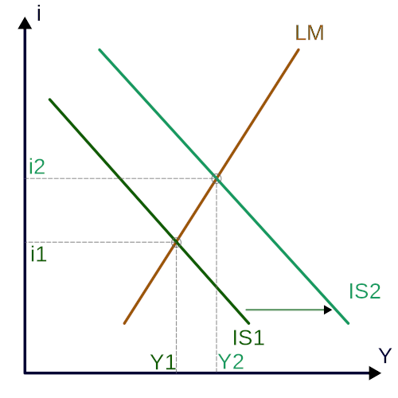{kind=link}
The IS-LM model takes investments and savings and compares that to liquidity and the overall money supply. It is highly useful in understanding macroeconomics from a Keynesian perspective. Interest rates (i) are on the vertical axis, and output (y) is on the horizontal axis.
Pigou's Wealth Effect
In the context of the above discussion on Keynes, Pigou's Wealth Effect underlines the fact that liquidity traps are not sustainable. The simplest way to explain the Wealth Effect is that an increase in spending will denote an increase in wealth. In many ways, what Pigou is putting forward is the idea that downwards spiral on the IS-LM model , as predicted by Keynes due to deflation, will be counterbalanced by an increase in real wages and thus an increase in expenditure. In other words, a decrease in employment and prices will eventually see higher purchasing power and an increase in spending, creating wealth.
Mundell-Fleming Exchange Rate Effect
Perhaps the most complex of the three inputs underlined in deriving aggregate demand is the Mundell-Fleming Exchange Rate Effect. Just like the previous two, this builds off of the IS-LM model in a way that discusses it in the context of an open economy (as opposed to a closed system). It essentially takes into account a new factor (in addition to interest rates and outputs, as the traditional IS-LM model incorporates). This new factor is the exchange rates, as the name implies. Robert Mundell and Marcus Fleming noted that incorporating the nominal exchange rate into the mix makes it impossible to maintain free capital movement, a fixed exchange rate and independent monetary policy. This is sometimes referred to as the 'impossible trinity,' implying that trade-offs must be made. This concept is illustrated fairly well in this figure , where 'FE' is fixed expenditure.
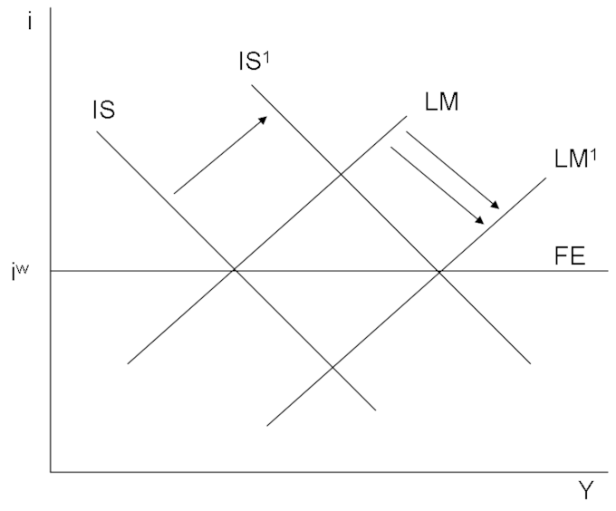{kind=link}
An increase in government spending forces the monetary authority to supply the market with local currency to keep the exchange rate unchanged. Shown here is the case of perfect capital mobility, in which the BoP curve (or, as denoted here, the FE curve) is horizontal.
Conclusion
While these varying effects make the concept of aggregate demand slopes seem somewhat complicated, the most important thing to keep in mind is that people will be demanding more goods when they are cheaper. The analysis of interest rates displayed above, through the wealth effect in particular, offsets the negative spiral that could occur as a result of deflation and decreased employment. These effects also play a crucial role in understanding the way in which the larger and more complex environment, including investments and fiscal and monetary policy, will retain this downwards slope.
24.3.3. Reasons for and Consequences of Shifts in the Aggregate Demand Curve
An increase in any of the four inputs into AD will result in higher real output or an increase in prices.
Learning Objective
Describe exogenous events that can shift the aggregate demand curve
Key Points
- There are four basic inputs to consider in calculating AD: consumption (C), investment (I), government spending (G) and net exports (NX, which is exports (X) – imports (I)).
- There are a variety of direct and indirect consequences in AD shifts. For the purpose of this discussion, it is most important to keep in mind changes in output and price.
- As the system moves closer to the highest potential output (optimal utilization of resources, or Y*), scarcity will naturally cause prices to increase more than the overall output in a system.
- As the system moves closer to the highest potential output (or optimal utilization of resources, or Y*), scarcity will naturally see the prices increases more so than the overall output in a system.
Key Term
- exogenous
- Received from outside a group
Aggregate demand (AD) is the summation of all demand within a given economy at a given time.
Inputs
There are four inputs to consider in calculating AD (and deriving the graphical curve which represents it): consumption (C), investment (I), government spending (G), and net exports (NX, which is exports (X) – imports (I)). Changes in these inputs will have some influence on the AD curve. For example, an increase in total expenditures will result in a shift rightwards, while a decrease in expenditure will result in a shift to the left.
Aggregate Demand Curves
Two specific AD representations are useful to consider:
- Keynesian Cross: The Keynesian Cross is a simple illustration of the relationship between aggregate demand and desired total spending (linear at 45 degrees). The intersecting AD line will generally have an upwards slope, under the assumption that increased national output should result in increased disposable income.
- Aggregate Demand/Aggregate Supply Model (AD/AS):The x-axis represents the overall output, while the y-axis represents the price level. The aggregate quantity demanded (Y = C + I + G + NX) is calculated at every given aggregate average price level.
Exogenous Effects
There are a variety of direct and indirect consequences to AD shifts. For the purpose of this discussion, the key consequences to keep in mind are changes in output and price. Below are some of the driving forces that will shift aggregate demand to the right:
- An exogenous increase in consumer spending;
- An exogenous increase in investment spending on physical capital;
- An exogenous increase in intended inventory investment;
- An exogenous increase in government spending on goods and services;
- An exogenous increase in transfer payments from the government to the people;
- An exogenous decrease in taxes levied;
- An exogenous increase in purchases of the country's exports by people in other countries; and
- An exogenous decrease in imports from other countries.
Short-term Implications
As noted above, any increase in the overall AD will result in an outwards (right-ward) shift of the AD curve. (Conversely, a decrease in aggregate demand will cause a leftward shift of the AD curve. ) This means that an increase in any of the four inputs to AD will result in a higher quantity of real output or an increase in prices across the board (this is also known as inflation). However, different levels of economic activity will result in different combinations of output and price increases.
is useful for understanding the distribution between price increases and output increases that will result in a given economy when AD increases. To put simply, the lower the utilization of available resources in a system, the more an increase in AD will result in higher output and thus higher employment and GDP growth. However, as the system evolves and aligns itself closer to the highest potential output (optimal utilization of resources or Y*), scarcity will naturally cause the prices to increase more than the overall output in a system. This is somewhat intuitive economically when scarcity and utilization are taken into account. The more difficult it is to generate a supply increase the more likely a shift in AD will drive up prices.

This graph illustrates the relationship between price and output within a given economic system in the context of aggregate demand and supply.
24.4. Aggregate Supply
24.4.1. Introducing Aggregate Supply
Aggregate supply is the total supply of goods and services that firms in a national economy plan to sell during a specific time period.
Learning Objective
Define Aggregate Supply
Key Points
- Aggregate supply is the relationship between the price level and the production of the economy.
- In the short-run, the aggregate supply is graphed as an upward sloping curve.
- The short-run aggregate supply equation is: Y = Y* + α(P-P_e). In the equation, Y is the production of the economy, Y* is the natural level of production of the economy, the coefficient α is always greater than 0, P is the price level, and P_e is the expected price level from consumers.
- In the long-run, the aggregate supply is graphed vertically on the supply curve.
- The equation used to determine the long-run aggregate supply is: Y = Y*. In the equation, Y is the production of the economy and Y* is the natural level of production of the economy.
Key Terms
- output
- Production; quantity produced, created, or completed.
- factor of production
- A resource employed to produce goods and services, such as labor, land, and capital.
Aggregate Supply
In economics, aggregate supply is the total supply of goods and services that firms in a national economy plan to sell during a specific time period. It is the total amount of goods and services that the firms are willing to sell at a given price level in the economy. Aggregate supply is the relationship between the price level and the production of the economy .
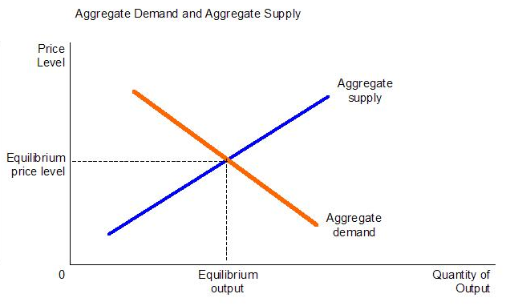{kind=link}
Aggregate supply is the total quantity of goods and services supplied at a given price. Its intersection with aggregate demand determines the equilibrium quantity supplied and price.
Short-run Aggregate Supply
In the short-run, the aggregate supply is graphed as an upward sloping curve. The equation used to determine the short-run aggregate supply is: Y = Y* + α(P-P_e). In the equation, Y is the production of the economy, Y* is the natural level of production of the economy, the coefficient α is always greater than 0, P is the price level, and P_e is the expected price level from consumers.
The short-run aggregate supply curve is upward sloping because the quantity supplied increases when the price rises. In the short-run, firms have one fixed factor of production (usually capital). When the curve shifts outward the output and real GDP increase at a given price. As a result, there is a positive correlation between the price level and output, which is shown on the short-run aggregate supply curve.
Long-run Aggregate Supply
In the long-run, the aggregate supply is graphed vertically on the supply curve. The equation used to determine the long-run aggregate supply is: Y = Y*. In the equation, Y is the production of the economy and Y* is the natural level of production of the economy.
The long-run aggregate supply curve is vertical which reflects economists' beliefs that changes in the aggregate demand only temporarily change the economy's total output. In the long-run, only capital, labor, and technology affect aggregate supply because everything in the economy is assumed to be used optimally. The long-run aggregate supply curve is static because it is the slowest aggregate supply curve.
24.4.2. The Slope of the Short-Run Aggregate Supply Curve
In the short-run, the aggregate supply curve is upward sloping.
Learning Objective
Summarize the characteristics of short-run aggregate supply
Key Points
- The AS curve is drawn using a nominal variable, such as the nominal wage rate. In the short-run, the nominal wage rate is fixed. As a result, an increasing price indicates higher profits that justify the expansion of output.
- The AS curve increases because some nominal input prices are fixed in the short-run and as output rises, more production processes encounter bottlenecks.
- In the short-run, the production can be increased without much diminishing returns. The average price level does not have to rise much in order to justify increased production. In this case, the AS curve is flat.
- When demand is high, there are few production processes that have unemployed fixed outputs. Any increase in demand production causes the prices to increase which results in a steep or vertical AS curve.
Key Terms
- supply
- The amount of some product that producers are willing and able to sell at a given price, all other factors being held constant.
- aggregate
- A mass, assemblage, or sum of particulars; something consisting of elements but considered as a whole.
Aggregate Supply
Aggregate supply is the total supply of goods and services that firms in a national economy plan to sell during a specific period of time. It is the total amount of goods and services that firms are willing to sell at a given price level.
Short-run Aggregate Supply Curve
In the short-run, the aggregate supply curve is upward sloping. There are two main reasons why the quantity supplied increases as the price rises:
- The AS curve is drawn using a nominal variable, such as the nominal wage rate. In the short-run, the nominal wage rate is fixed. As a result, an increasing price indicates higher profits that justify the expansion of output.
- An alternate model explains that the AS curve increases because some nominal input prices are fixed in the short-run and as output rises, more production processes encounter bottlenecks. At low levels of demand, large numbers of production processes do not make full use of their fixed capital equipment. As a result, production can be increased without much diminishing returns. The average price level does not have to rise much in order to justify increased production. In this case, the AS curve is flat. Likewise, when demand is high, there are few production processes that have unemployed fixed outputs. Any increase in demand production causes the prices to increase which results in a steep or vertical AS curve.
Short-run Aggregate Supply Equation
The equation used to calculate the short-run aggregate supply is: Y = Y* + α(P-P_e). In the equation, Y is the production of the economy, Y* is the natural level of production, coefficient is always positive, P is the price level, and P_e is the expected price level.
In the short-run, firms possess fixed factors of production, including prices, wages, and capital. It is possible for the short-run supply curve to shift outward as a result of an increase in output and real GDP at a given price . As a result, the short-run aggregate supply curve shows the correlation between the price level and output.
{kind=link}
This graph shows the aggregate supply curve. In the short-run the aggregate supply curve is upward sloping. When the curve shifts outward, it is due to an increase in output and real GDP.
24.4.3. The Slope of the Long-Run Aggregate Supply Curve
The long-run aggregate supply curve is perfectly vertical; changes in aggregate demand only cause a temporary change in total output.
Learning Objective
Assess factors that influence the shape and movement of the long run aggregate supply curve
Key Points
- The long-run is a planning and implementation phase. It is the conceptual time period in which there are no fixed factors of production.
- In the long-run, only capital, labor, and technology affect the aggregate supply curve because at this point everything in the economy is assumed to be used optimally.
- Aggregate supply is usually inadequate to supply ample opportunity. Often, this is fixed capital equipment. The AS curve is drawn given some nominal variable, such as the nominal wage rate.
- In the long run, the nominal wage rate varies with economic conditions (high unemployment leads to falling nominal wages -- and vice-versa).
- The equation used to calculate the long-run aggregate supply is: Y = Y*. In the equation, Y is the level of economic production and Y* is the natural level of production.
Key Term
- long-run
- The conceptual time period in which there are no fixed factors of production.
Aggregate Supply
In economics, aggregate supply is defined as the total supply of goods and services that firms in a national economy are willing to sell at a given price level.
Long-run in Economics
The long-run is the conceptual time period in which there are no fixed factors of production; all factors can be changed. In the long-run, firms change supply levels in response to expected economic profits or losses.
Long-run Aggregate Supply Curve
In the long-run, only capital, labor, and technology affect the aggregate supply curve because at this point everything in the economy is assumed to be used optimally. The long-run aggregate supply curve is static because it shifts the slowest of the three ranges of the aggregate supply curve. The long-run aggregate supply curve is perfectly vertical, which reflects economists' belief that the changes in aggregate demand only cause a temporary change in an economy's total output . In the long-run, there is exactly one quantity that will be supplied.
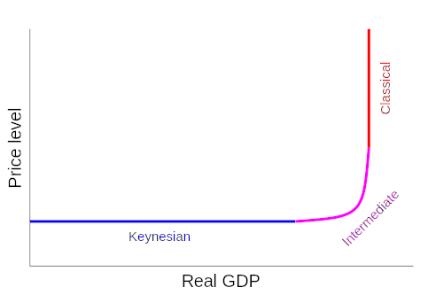{kind=link}
This graph shows the aggregate supply curve. In the long-run the aggregate supply curve is perfectly vertical, reflecting economists' belief that changes in aggregate demand only cause a temporary change in an economy's total output.
The long-run aggregate supply curve can be shifted, when the factors of production change in quantity. For example, if there is an increase in the number of available workers or labor hours in the long run, the aggregate supply curve will shift outward (it is assumed the labor market is always in equilibrium and everyone in the workforce is employed). Similarly, changes in technology can shift the curve by changing the potential output from the same amount of inputs in the long-term.
For the short-run aggregate supply, the quantity supplied increases as the price rises. The AS curve is drawn given some nominal variable, such as the nominal wage rate. In the short run, the nominal wage rate is taken as fixed. Therefore, rising P implies higher profits that justify expansion of output. However, in the long run, the nominal wage rate varies with economic conditions (high unemployment leads to falling nominal wages -- and vice-versa).
The equation used to calculate the long-run aggregate supply is: Y = Y*. In the equation, Y is the level of economic production and Y* is the natural level of production.
24.4.4. Moving from Short-Run to Long-Run
In the short-run, the price level of the economy is sticky or fixed; in the long-run, the price level for the economy is completely flexible.
Learning Objective
Recognize the role of capital in the shape and movement of the short-run and long-run aggregate supply curve
Key Points
- When capital increases, the aggregate supply curve will shift to the right, prices will drop, and the quantity of the good or service will increase.
- The short-run aggregate supply curve is an upward slope. The short-run is when all production occurs in real time.
- The long-run curve is perfectly vertical, which reflects economists' belief that changes in aggregate demand only temporarily change an economy's total output. The long-run is a planning and implementation stage.
- Aggregate supply moves from short-run to long-run by considering some equilibrium that is the same for both short and long-run when analyzing supply and demand. That state of equilibrium is then compared to the new short-run and long-run equilibrium state from a change that disturbs equilibrium.
Key Term
- capital
- Already-produced durable goods available for use as a factor of production, such as steam shovels (equipment) and office buildings (structures).
In economics, the short-run is the period when general price level, contractual wages, and expectations do not fully adjust. In contrast, the long-run is the period when the previously mentioned variables adjust fully to the state of the economy.
Aggregate Supply
Aggregate supply is the total amount of goods and services that firms are willing to sell at a given price level.
When capital increases, the aggregate supply curve will shift to the right, prices will drop, and the quantity of the good or service will increase.
Short-run Aggregate Supply
During the short-run, firms possess one fixed factor of production (usually capital). It is possible for the curve to shift outward in the short-run, which results in increased output and real GDP at a given price. In the short-run, there is a positive relationship between the price level and the output . The short-run aggregate supply curve is an upward slope. The short-run is when all production occurs in real time.

This graph shows the relationship between aggregate supply and aggregate demand in the short-run. The curve is upward sloping and shows a positive correlation between the price level and output.
Long-run Aggregate Supply
In the long-run only capital, labor, and technology impact the aggregate supply curve because at this point everything in the economy is assumed to be used optimally. The long-run supply curve is static and shifts the slowest of all three ranges of the supply curve. The long-run curve is perfectly vertical, which reflects economists' belief that changes in aggregate demand only temporarily change an economy's total output. The long-run is a planning and implementation stage.
Moving from Short-run to Long-run
In the short-run, the price level of the economy is sticky or fixed depending on changes in aggregate supply. Also, capital is not fully mobile between sectors.
In the long-run, the price level for the economy is completely flexible in regards to shifts in aggregate supply. There is also full mobility of labor and capital between sectors of the economy.
The aggregate supply moves from short-run to long-run when enough time passes such that no factors are fixed. That state of equilibrium is then compared to the new short-run and long-run equilibrium state if there is a change that disturbs equilibrium.
24.4.5. Reasons for and Consequences of Shifts in the Short-Run Aggregate Supply Curve
The short-run aggregate supply shifts in relation to changes in price level and production.
Learning Objective
Identify common reasons for shifts in the short-run aggregate supply curve, Explain the consequences of shifts in the short-run aggregate supply curve
Key Points
- In the short-run, the aggregate supply curve is upward sloping because some nominal input prices are fixed and as the output rises, more production processes experience bottlenecks.
- At low levels of demand, production can be increased without diminishing returns and the average price level does not rise.
- When the demand is high, few production processes have unemployed fixed inputs. Any increase in demand and production increases the prices.
- Any event that results in a change of production costs shifts the short-run supply curve outwards or inwards if the production costs are decreased or increased.
Key Term
- short-run
- When one or more factors are fixed.
Aggregate Supply
The aggregate supply is the relation between the price level and production of an economy. It is the total supply of goods and services that firms in a national economy plan on selling during a specific time period at a given price level.
Short-run Aggregate Supply
In the short-run, the aggregate supply curve is upward sloping because some nominal input prices are fixed and as the output rises, more production processes experience bottlenecks. At low levels of demand, production can be increased without diminishing returns and the average price level does not rise. However, when the demand is high, few production processes have unemployed fixed inputs. Any increase in demand and production increases the prices. In the short-run, the general price level, contractual wage rates, and expectations many not fully adjust to the state of the economy.
Shifts in the Short-run Aggregate Supply
The short-run aggregate supply shifts in relation to changes in price level and production. The equation used to determine the short-run aggregate supply is: Y = Y* + α(P-P_e). Y is the production of the economy, Y* is the natural level of production, coefficient α is always positive, P is the price level, and P_e is the expected price level.
In the short-run, examples of events that shift the aggregate supply curve to the right include a decrease in wages, an increase in physical capital stock, or advancement of technology. The short-run curve shifts to the right the price level decreases and the GDP increases. When the curve shifts to the left, the price level increases and the GDP decreases.
Any event that results in a change of production costs shifts the short-run supply curve outwards or inwards if the production costs are decreased or increased . Factors that impact and shift the short-run curve are taxes and subsides, price of labor (wages), and the price of raw materials. Changes in the quantity and quality of labor and capital also influence the short-run aggregate supply curve.

This graph shows the Aggregate Suppy-Aggregate Demand model. In regards to aggregate supply, increases or decreases in the price level and output cause the aggregate supply curve to shift in the short-run.
24.5. The Aggregate Demand-Supply Model
24.5.1. Macroeconomic Equilibrium
In economics, the macroeconomic equilibrium is a state where aggregate supply equals aggregate demand.
Learning Objective
Analyze aggregate demand and supply in the long run
Key Points
- Equilibrium is the price-quantity pair where the quantity demanded is equal to the quantity supplied.
- In the long-run, increases in aggregate demand cause the output and price of a good or service to increase.
- In the long-run, the aggregate supply is affected only by capital, labor, and technology.
- The aggregate supply determines the extent to which the aggregate demand increases the output and prices of a good or service.
Key Terms
- aggregate
- A mass, assemblage, or sum of particulars; something consisting of elements but considered as a whole.
- supply
- The amount of some product that producers are willing and able to sell at a given price, all other factors being held constant.
- demand
- The desire to purchase goods and services.
Economic Equilibrium
In economics, equilibrium is a state where economic forces (supply and demand) are balanced. Without any external influences, price and quantity will remain at the equilibrium value .

Similar to microeconomic equilibrium, the macroeconomic equilibrium is the point at which the aggregate supply intersects the aggregate demand.
Supply and Demand
Determining the supply and demand for a good or services provides a model of price determination in a market. In a competitive market, the unit price for a good will vary until it settles at a point where the quantity demanded equals the quantity supplied. The result is the economic equilibrium for that good or service.
There are four basic laws of supply and demand. The laws impact both supply and demand in the long-run.
- If quantity demand increases and supply remains unchanged, a shortage occurs, leading to a higher price until the quantity demanded is pushed back to equilibrium.
- If quantity demand decreases and supply remains unchanged, a surplus occurs, leading to a lower price until the quantity demanded is pushed back to equilibrium.
- If quantity demand remains unchanged and supply increases, a surplus occurs, leading to a lower price until the quantity supplied is pushed back to equilibrium.
- If quantity demand remains unchanged and supply decreases, a shortage occurs, leading to a higher price until the quantity supplied is pushed back to equilibrium.
Aggregate Supply and Aggregate Demand
Aggregate supply is the total supply of goods and services that firms in a national economy plan on selling during a specific time period. It is the total amount of goods and services that firms are willing to sell at a specific price level in an economy .
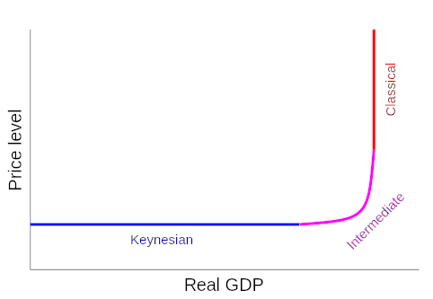{kind=link}
This graph shows the three stages of aggregate supply. It is the total supply of goods and services that firms in a national economy plan to sell during a specific time period. Changes in aggregate supply cause shifts along the supply curve.
Aggregate demand is the total demand for final goods and services in an economy at a given time and price level. It is the demand for the gross domestic product (GDP) of a country.
Aggregate Supply-Aggregate Demand Model
Equilibrium is the price-quantity pair where the quantity demanded is equal to the quantity supplied. It is represented on the AS-AD model where the demand and supply curves intersect. In the long-run, increases in aggregate demand cause the price of a good or service to increase. When the demand increases the aggregate demand curve shifts to the right. In the long-run, the aggregate supply is affected only by capital, labor, and technology. Examples of events that would increase aggregate supply include an increase in population, increased physical capital stock, and technological progress. The aggregate supply determines the extent to which the aggregate demand increases the output and prices of a good or service.
When the aggregate supply and aggregate demand shift, so does the point of equilibrium. The aggregate demand curve shifts and the equilibrium point moves horizontally along the aggregate supply curve until it reaches the new aggregate demand point.
24.5.2. Reasons for and Consequences of Shift in Aggregate Demand
A short-run shift in aggregate demand can change the equilibrium price and output level.
Learning Objective
Explain the causes of economic fluctuations using aggregate demand curves
Key Points
- The aggregate supply curve determines the extent to which increases in aggregate demand lead to increases in real output or increases in prices.
- The equation used to calculate aggregate demand is: AD = C + I + G + (X - M).
- The aggregate demand curve shifts to the right as a result of monetary expansion.
- If the monetary supply decreases, the demand curve will shift to the left.
Key Terms
- aggregate demand
- The the total demand for final goods and services in the economy at a given time and price level.
- Supply curve
- A graph that illustrates the relationship between the price of a good and the quantity supplied.
- output
- Production; quantity produced, created, or completed.
Aggregate Demand
In economics, aggregate demand is the total demand for final goods and services at a given time and price level. It gives the amounts of goods and services that will be demanded at all possible price levels, which, unless there are shortages, is equivalent to GDP. Aggregate demand equals the sum of consumption (C), investment (I), government spending (G), and net export (X -M). This is often written as an equation, which is given by:
AD = C + I + G + (X - M).
Shifts in the Aggregate Supply-Aggregate Demand Model
The aggregate supply-aggregate demand model uses the theory of supply and demand in order to find a macroeconomic equilibrium. The shape of the aggregate supply curve helps to determine the extent to which increases in aggregate demand lead to increases in real output or increases in prices. An increase in any of the components of aggregate demand shifts the AD curve to the right. When the AD curve shifts to the right it increases the level of production and the average price level. When an economy gets close to potential output, the price will increase more than the output as the AD rises .

The Aggregate Supply-Aggregate Demand Model shows how equilibrium is determined by supply and demand. It shows how increases and decreases in output and prices impact the economy in the short-run and long-run. The model is also used to show real and potential output.
When price increase dominates an economy, this means that the economy is near its potential output.
Reasons for Aggregate Demand Shift
The slope of the aggregate demand curve shows the extent to which the real balances change the equilibrium level of spending. The aggregate demand curve shifts to the right as a result of monetary expansion. In an economy, when the nominal money stock in increased, it leads to higher real money stock at each level of prices. The interest rates decrease which causes the public to hold higher real balances. This stimulates aggregate demand, which increases the equilibrium level of income and spending. Likewise, if the monetary supply decreases, the demand curve will shift to the left.
24.5.3. Reasons for and Consequences of Shift in Aggregate Supply
In economics, the aggregate supply shifts and shows how much output is supplied by firms at different price levels.
Learning Objective
Explain shifts in aggregate supply and their impact on the economy
Key Points
- The aggregate supply curve shows how much output is supplied by firms at different price levels.
- The short-run aggregate supply curve is affected by production costs including taxes, subsides, price of labor (wages), and the price of raw materials.
- The long-run aggregate supply curve is affected by events that change the potential output of the economy.
Key Term
- supply shock
- An event that suddenly changes the price of a commodity or service. It may be caused by a sudden increase or decrease in the supply of a particular good.
Aggregate Supply
In economics, aggregate supply is defined as the total supply of goods and services that firms in a national economy produce during a specific period of time. It is the total amount of goods and services that firms are willing to sell at a specific price level in the economy.
Shift in Aggregate Supply
The aggregate supply curve may shift labor market disequilibrium or labor market equilibrium. If labor or another input suddenly becomes cheaper, there would be a supply shock such that supply curve may shift outward, causing the equilibrium price in to drop and the equilibrium quantity to increase.
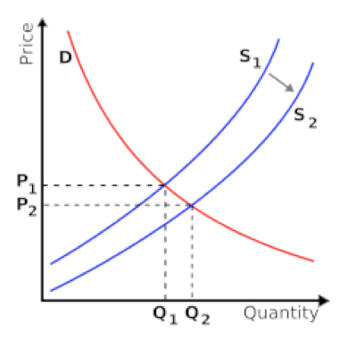{kind=link}
A supply shock could be caused by changing regulations or a sudden change in the price of an input, among other reasons.
During the short-run, there is one fixed factor of production, usually capital. However, the fixed factor does not stop the curve's ability to shift outward. When the curve shifts to the right, it causes an increase in the output and a decrease in the GDP at a given price. Examples of events that cause the curve to shift to the right in the short-run include a decrease in the wage rate, an increase in physical capital stock, and technological progress.
In the long-run only capital, labor, and technology affect the aggregate supply curve because at this point everything in the economy is assumed to be used optimally. The long run curve is often seen as static because it shift the slowest. The long-run aggregate supply curve is vertical which shows economist's belief that changes in aggregate demand only have a temporary change on the economy's total output. Examples of events that shift the long-run curve to the right include an increase in population, an increase in physical capital stock, and technological progress.
Reasons for Shifts
The short-run aggregate supply curve is affected by production costs including taxes, subsidies, price of labor (wages), and the price of raw materials. All of these factors will cause the short-run curve to shift. When there are changes in the quality and quantity of labor and capital the changes affect both the short-run and long-run supply curves. The long-run aggregate supply curve is affected by events that change the potential output of the economy.
Changes in short-run aggregate supply cause the price level of the good or service to drop while the real GDP increases. In the long-run the prices stabilize and the price level of the good or service increase in response to the changes.